전기기사 (2021-03-07 기출문제)
1과목: 전기자기학
1. 평등 전계 중에 유전체 구에 의한 전속 분포가 그림과 같이 되었을 때 ε1과 ε2의 크기 관계는?
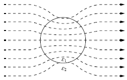
- ε1 ＞ ε2
- ε1 ＜ ε2
- ε1 = ε2
- ε1 ≤ ε2
(정답률: 83%)

2. 커패시터를 제조하는 데 4가지(A, B, C, D)의 유전재료가 있다. 커패시터 내의 전계를 일정하게 하였을 때, 단위체적당 가장 큰 에너지 밀도를 나타내는 재료부터 순서대로 나열한 것은? (단, 유전재료 A, B, C, D의 비유전율은 각각 εrA = 8, εrB = 10, εrC = 2, εrD = 4 이다.)
- C ＞ D ＞ A ＞ B
- B ＞ A ＞ D ＞ C
- D ＞ A ＞ C ＞ B
- A ＞ B ＞ D ＞ C
(정답률: 84%)
3. 정상전류계에서 ∇ · i = 0에 대한 설명으로 틀린 것은?
- 도체 내에 흐르는 전류는 연속이다.
- 도체 내에 흐르는 전류는 일정하다.
- 단위 시간당 전하의 변화가 없다.
- 도체 내에 전류가 흐르지 않는다.
(정답률: 71%)
4. 진공 내의 점 (2, 2, 2)에 10-9의 전하가 놓여 있다. 점 (2, 5, 6)에서의 전계 E는 약 몇 [V/m]인가? (단, ay, az는 단위벡터이다.)
- 0.278ay + 2.888az
- 0.216ay + 0.288az
- 0.288ay + 0.216az
- 0.291ay + 0.288az
(정답률: 63%)
5. 방송국 안테나 출력이 W[W]이고 이로부터 진공 중에 r[m] 떨어진 점에서 자계의 세기의 실효치는 약 몇 [A/m]인가?
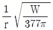
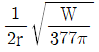
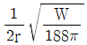
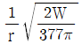
(정답률: 68%)
6. 반지름이 a[m]인 원형 도선 2개의 루프가 z축 상에 그림과 같이 놓인 경우 I[A]의 전류가 흐를 때 원형전류 중심축상의 자계 H[A/m]는? (단, az, aø는 단위벡터이다.)
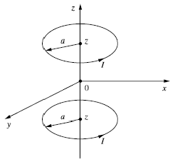
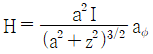
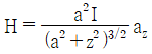
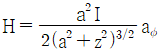
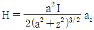
(정답률: 50%)
7. 직교하는 무한 평판도체와 점전하에 의한 영상전하는 몇 개 존재하는가?
- 2
- 3
- 4
- 5
(정답률: 64%)
8. 전하 e[C], 질량 m[kg]인 전자가 전계 E[V/m] 내에 놓여 있을 때 최초에 정지하고 있었다면 t초 후에 전자의 속도[m/s]는?
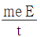
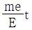
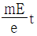
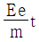
(정답률: 51%)
9. 그림과 같은 환상 솔레노이드 내의 철심 중심에서의 자계의 세기 H[AT/m]는? (단, 환상 철심의 평균 반지름은 r[m], 코일의 권수는 N회, 코일에 흐르는 전류는 I[A]이다.)
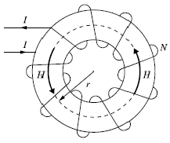
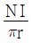
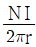
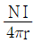
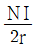
(정답률: 79%)
10. 환상 솔레노이드 단면적이 S, 평균 반지름이 r, 권선수가 N이고 누설자속이 없는 경우 자기 인덕턴스의 크기는?
- 권선수 및 단면적에 비례한다.
- 권선수의 제곱 및 단면적에 비례한다.
- 권선수의 제곱 및 평균 반지름에 비례한다.
- 권선수의 제곱에 비례하고 단면적에 반비례한다.
(정답률: 72%)
11. 다음 중 비투자율(μr)이 가장 큰 것은?
- 금
- 은
- 구리
- 니켈
(정답률: 67%)
12. 한 변의 길이가 l[m]인 정사각형 도체에 전류 I[A]가 흐르고 있을 때 중심점 P에서의 자계의 세기는 몇 [A/m]인가?
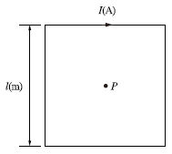
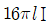
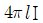
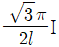
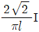
(정답률: 81%)
13. 간격이 3[cm]이고 면적이 30[cm2]인 평판의 공기 콘덴서에 220[V]의 전압을 가하면 두 판 사이에 작용하는 힘은 약 몇 [N]인가?
- 6.3 × 10-6
- 7.14 × 10-7
- 8 × 10-5
- 5.75 × 10-4
(정답률: 44%)
14. 비유전율이 2이고, 비투자율이 2인 매질 내에서의 전자파의 전파속도 v[m/s]와 진공 중의 빛의 속도 v0[m/s] 사이 관계는?
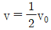
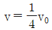
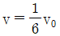
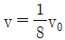
(정답률: 65%)
15. 영구자석의 재료로 적합한 것은?
- 잔류 자속밀도(Br)는 크고, 보자력(Hc)은 작아야 한다.
- 잔류 자속밀도(Br)는 작고, 보자력(Hc)은 커야 한다.
- 잔류 자속밀도(Br)와 보자력(Hc) 모두 작야야 한다.
- 잔류 자속밀도(Br)와 보자력(Hc) 모두 커야 한다.
(정답률: 77%)
16. 전계 E[V/m], 전속밀도 D[C/m2], 유전율 ε = ε0εr [F/m], 분극의 세기 P[C/m2] 사이의 관계를 나타낸 것으로 옳은 것은?
- P = D + ε0 E
- P = D - ε0 E
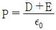
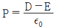
(정답률: 76%)
17. 동일한 금속 도선의 두 점 사이에 온도차를 주고 전류를 흘렸을 때 열의 발생 또는 흡수가 일어나는 현상은?
- 펠티에(Peltier) 효과
- 볼타(Volta) 효과
- 제백(Seebeck) 효과
- 톰슨(Thomson) 효과
(정답률: 62%)
18. 강자성체가 아닌 것은?
- 코발트
- 니켈
- 철
- 구리
(정답률: 74%)
19. 내구의 반지름이 2cm, 외구의 반지름이 3cm인 동심 구 도체 간의 고유저항이 1.884 ×102 Ω·m인 저항 물질로 채어져 있을 때, 내외구 간의 합성 저항은 약 몇 Ω인가?
- 2.5
- 5.0
- 250
- 500
(정답률: 49%)
20. 비투자율 μr = 800, 원형 단면적이 S = 10cm2, 평균 자로 길이 l = 16π × 10-2(m)의 환상 철심에 600회의 코일을 감고 이 코일에 1A의 전류를 흘리면 환상 철심 내부의 자속은 몇 Wb인가?
- 1.2 × 10-3
- 1.2 × 10-5
- 2.4 × 10-3
- 2.4 × 10-5
(정답률: 57%)
2과목: 전력공학
21. 그림과 같은 유황곡선을 가진 수력지점에서 최대사용수량 0C로 1년간 계속 발전하는 데 필요한 저수지의 용량은?
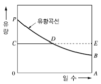
- 면적 0CPBA
- 면적 0CDBA
- 면적 DEB
- 면적 PCD
(정답률: 68%)
22. 고장전류의 크기가 커질수록 동작시간이 짧게 되는 특성을 가진 계전기는?
- 순한시 계전기
- 정한시 계전기
- 반한시 계전기
- 반한시 정한시 계전기
(정답률: 75%)
23. 접지봉으로 탑각의 접지저항값을 희망하는 접지저항 값까지 줄일 수 없을 때 사용하는 것은?
- 가공지선
- 매설지선
- 크로스본드선
- 차폐선
(정답률: 72%)
24. 3상 3선식 송전선에서 한 선의 저항이 10Ω, 리액턴스가 20Ω이며, 수전단의 선간전압이 60kV, 부하역률이 0.8인 경우에 전압강하율이 10%라 하면 이송전선로로는 약 몇 kW 까지 수전할 수 있는가?
- 10,000
- 12,000
- 14,400
- 18,000
(정답률: 50%)
25. 배전선로의 주상변압기에서 고압측-저압측에 주로 사용되는 보호장치의 조합으로 적합한 것은?
- 고압측 : 컷아웃 스위치, 저압측 : 캐치홀더
- 고압측 : 캐치홀더, 저압측 : 컷아웃 스위치
- 고압측 : 리클로저, 저압측 : 라인퓨즈
- 고압측 : 라인퓨즈, 저압측 : 리클로저
(정답률: 64%)
26. % 임피던스에 대한 설명으로 틀린 것은?
- 단위를 갖지 않는다.
- 절대량이 아닌 기준량에 대한 비를 나타낸 것이다.
- 기기 용량의 크기와 관계없이 일정한 범위의 값을 갖는다.
- 변압기나 동기기의 내부 임피던스에만 사용할 수 있다.
(정답률: 71%)
27. 연료의 발열량이 430kcal/kg일 때, 화력발전소의 열효율(%)은? (단, 발전기 출력은 PG [kW], 시간당 연료의 소비량은 B[kg/h]이다.)
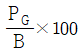
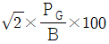
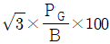
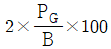
(정답률: 54%)
28. 수용가의 수용률을 나타낸 식은?
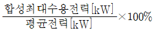
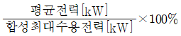
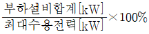
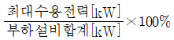
(정답률: 68%)
29. 화력발전소에서 증기 및 급수가 흐르는 순서는?
- 절탄기 → 보일러 → 과열기 → 터빈 → 복수기
- 보일러 → 절탄기 → 과열기 → 터빈 → 복수기
- 보일러 → 과열기 → 절탄기 → 터빈 → 복수기
- 절탄기 → 과열기 → 보일러 → 터빈 → 복수기
(정답률: 68%)
30. 역률 0.8, 출력 320[kW]인 부하에 전력을 공급하는 변전소에 역률 개선을 위해 전력용 콘덴서 140[kVA]를 설치했을 때 합성역률은?
- 0.93
- 0.95
- 0.97
- 0.99
(정답률: 50%)
31. 용량 20[kVA]인 단상 주상 변압기에 걸리는 하루 동안의 부하가 처음 14시간 동안은 20[kW], 다음 10시간 동안은 10[kW]일 때, 이 변압기에 의한 하루 동안의 손실량[Wh]은? (단, 부하의 역률은 1로 가정하고, 변압기의 전 부하동손은 300[W], 철손은 100[W]이다.)
- 6,850
- 7,200
- 7,350
- 7,800
(정답률: 43%)
32. 통신선과 평행인 주파수 60[Hz]의 3상 1회선 송전선이 있다. 1선 지락 때문에 영상전류가 100[A] 흐르고 있다면 통신선에 유도되는 전자유도전압[V]은 약 얼마인가? (단, 영상전류는 전 전선에 걸쳐서 같으며, 송전선과 통신선과의 상호 인덕턴스는 0.06[mH/km], 그 평행 길이는 40[km]이다.)
- 156.6
- 162.8
- 230.2
- 271.4
(정답률: 47%)
33. 케이블 단선사고에 의한 고장점까지의 거리를 정전용량 측정법으로 구하는 경우, 건전상의 정전용량이 C, 고장점까지의 정전용량이 Cx, 케이블의 길이가 l일 때 고장점까지의 거리를 나타내는 식으로 알맞은 것은?
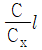
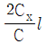
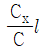
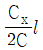
(정답률: 58%)
34. 전력 퓨즈(Power Fuse)는 고압, 특고압기기의 주로 어떤 전류의 차단을 목적으로 설치하는가?
- 충전전류
- 부하전류
- 단락전류
- 영상전류
(정답률: 69%)
35. 송전선로에서 1선 지락 시에 건전상의 전압 상승이 가장 적은 접지방식은?
- 비접지방식
- 직접접지방식
- 저항접지방식
- 소호리액터접지방식
(정답률: 55%)
36. 기준 선간전압 23[kV], 기준 3상 용량 5,000[kVA], 1선의 유도 리액턴스가 15[Ω]일 때 % 리액턴스는?
- 28.36[%]
- 14.18[%]
- 7.09[%]
- 3.55[%]
(정답률: 70%)
37. 전력원선도의 가로축과 세로축을 나타내는 것은?
- 전압과 전류
- 전압과 전력
- 전류와 전력
- 유효전력과 무효전력
(정답률: 69%)
38. 송전선로에서의 고장 또는 발전기 탈락과 같은 큰 외란에 대하여 계통에 연결된 각 동기기가 동기를 유지하면서 계속 안정적으로 운전할 수 있는지를 판별하는 안정도는?
- 동태안정도(Dynamic Stability)
- 정태안정도(Steady-state Stability)
- 전압안정도(Voltage Stability)
- 과도안정도(Transient Stability)
(정답률: 58%)
39. 정전용량이 C1이고, V1의 전압에서 Qr의 무효전력을 발생하는 콘덴서가 있다. 정전용량을 변화시켜 2배로 승압된 전압(2V1)에서도 동일한 무효전력 Qr을 발생시키고자 할 때, 필요한 콘덴서의 정전용량 C2는?
- C2 = 4C1
- C2 = 2C1
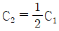
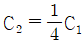
(정답률: 43%)
40. 송전선로의 고장전류 계산에 영상 임피던스가 필요한 경우는?
- 1선 지락
- 3상 단락
- 3선 단선
- 선간 단락
(정답률: 74%)
3과목: 전기기기
41. 3,300/220[V]의 단상 변압기 3대를 △-Y결선하고 2차측 선간에 15[kW]의 단상 전열기를 접속하여 사용하고 있다. 결선을 △-△로 변경하는 경우 이 전열기의 소비전력은 몇 [kW]로 되는가?
- 5
- 12
- 15
- 21
(정답률: 52%)
42. 히스테리시스 전동기에 대한 설명으로 틀린 것은?
- 유도전동기와 거의 같은 고정자이다.
- 회전자 극은 고정자 극에 비하여 항상 각도 δh만큼 앞선다.
- 회전자가 부드러운 외면을 가지므로 소음이 적으며, 순조롭게 회전시킬 수 있다.
- 구속 시부터 동기속도만을 제외한 모든 속도 범위에서 일정한 히스테리시스 토크를 발생한다.
(정답률: 44%)
43. 직류기에서 계자자속을 만들기 위하여 전자석의 권선에 전류를 흘리는 것을 무엇이라 하는가?
- 보 극
- 여 자
- 보상권선
- 자화작용
(정답률: 65%)
44. 사이클로 컨버터(Cyclo Converter)에 대한 설명으로 틀린 것은?
- DC - DC Buck 컨버터와 동일한 구조이다.
- 출력주파수가 낮은 영역에서 많은 장점이 있다.
- 시멘트공장의 분쇄기 등과 같이 대용량 저속 교류전동기 구종에 주로 사용된다.
- 교류를 교류로 직접변환하면서 전압과 주파수를 동시에 가변하는 전력변환기이다.
(정답률: 52%)
45. 1차 전압은 3,300[V]이고 1차측 무부하 전류는 0.15[A], 철손은 330[W]인 단상 변압기의 자화전류는 약 몇 [A]인가?
- 0.112
- 0.145
- 0.181
- 0.231
(정답률: 46%)
46. 유도전동기의 안정 운전의 조건은? (단, Tm : 전동기 토크, TL : 부하 토크, n : 회전수)
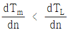
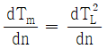
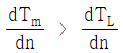
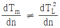
(정답률: 63%)
47. 3상 권선형 유도전동기 기동 시 2차측에 외부 가변저항을 넣는 이유는?
- 회전수 감소
- 기동전류 증가
- 기동토크 증가
- 기동전류 감소와 기동토크 증가
(정답률: 63%)
48. 극수 4이며 전기자 권선은 파권, 전기자 도체수가 250인 직류발전기가 있다. 이 발전기가 1,200[rpm]으로 회전할 때 600[V]의 기전력을 유기하려면 1극당 자속은 몇 [Wb]인가?
- 0.04
- 0.⑤
- 0.06
- 0.07
(정답률: 62%)
49. 발전기 회전자에 유도자를 주로 사용하는 발전기는?
- 수차발전기
- 엔진발전기
- 터빈발전기
- 고주파발전기
(정답률: 54%)
50. BJT에 대한 설명으로 틀린 것은?
- Bipolar Junction Thyristor의 약자이다.
- 베이스 전류로 컬렉터 전류를 제어하는 전류제어 스위치이다.
- MOSFET, IGBT 등의 전압제어 스위치보다 훨씬 큰 구동전력이 필요하다.
- 회로기호 B, E, C는 각각 베이스(Base), 에미터(Emitter), 컬렉터(Collerctor)이다.
(정답률: 60%)
51. 3상 유도전동기에서 회전자가 슬립 s로 회전하고 있을 때 2차 유기전압 E2s 및 2차 주파수 f2s 와 s와의 관계는? (단, E2는 회전자가 정지하고 있을 때 2차 유기기전력이며 f1은 1차 주파수이다.)
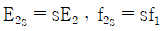
(정답률: 63%)
52. 전류계를 교체하기 위해 우선 변류기 2차측을 단락시켜야 하는 이유는?
- 측정오차 방지
- 2차측 절연 보호
- 2차측 과전류 보호
- 1차측 과전류 방지
(정답률: 51%)
53. 단자전압 220[V], 부하전류 50[A]인 분권발전기의 유도 기전력은 몇 [V]인가? (단, 여기서 전기자 저항은 0.2[Ω]이며, 계자전류 및 전기자 반작용은 무시한다.)
- 200
- 210
- 220
- 230
(정답률: 61%)
54. 기전력(1상)이 Eo이고 동기임피던스(1상)가 Zs인 2대의 3상 동기발전기를 무부하로 병렬 운전시킬 때 각 발전기의 기전력 사이에 δs의 위상차가 있으면 한쪽발전기에서 다른 쪽 발전기로 공급되는 1상당의 전력[W]은?
(정답률: 46%)
55. 전압이 일정한 모선에 접속되어 역률 1로 운전하고 있는 동기전동기를 동기조상기로 사용하는 경우 여자전류를 증가시키면 이 전동기는 어떻게 되는가?
- 역률은 앞서고, 전기자 전류는 증가한다.
- 역률은 앞서고, 전기자 전류는 감소한다.
- 역률은 뒤지고, 전기자 전류는 증가한다.
- 역률은 뒤지고, 전기자 전류는 감소한다.
(정답률: 50%)
56. 직류발전기의 전기자 반작용에 대한 설명으로 틀린 것은?
- 전기자 반작용으로 인하여 전기적 중성축을 이동시킨다.
- 정류자 편간 전압이 불균일하게 되어 섬락의 원인이 된다.
- 전기자 반작용이 생기면 주자속이 왜곡되고 증가하게 된다.
- 전기자 반작용이란, 전기자 전류에 의하여 생긴 자속이 계자에 의해 발생되는 주자속에 영향을 주는 현상을 말한다.
(정답률: 62%)
57. 단상 변압기 2대를 병렬 운전할 경우, 각 변압기의 부하전류를 Ia, Ib, 1차측으로 환산한 임피던스를 Za, Zb, 백분율 임피던스 강하를 za, zb, 정격용량을 Pan, Pbn 이라 한다. 이때 부하 분담에 대한 관계로 옳은 것은?
(정답률: 59%)
58. 단상 유도전압조정기에서 단락권선의 역할은?
- 철손 경감
- 절연 보호
- 전압강하 경감
- 전압조정 용이
(정답률: 43%)
59. 동기리액턴스 Xs = 10[Ω], 전기자 권선저항 ra = 0.1[Ω], 3상 중 1상의 유도기전력 E = 6,400[V], 단자전압 V = 4,000[V], 부하각 δ = 30°이다. 비철극기인 3상 동기발전기의 출력은 약 몇 [kW]인가?
- 1,280
- 3,840
- 5,560
- 6,650
(정답률: 49%)
60. 60[Hz], 6극의 3상 권선형 유도전동기가 있다. 이 전동기의 정격 부하 시 회전수는 1,140[rpm]이다. 이 전동기를 같은 공급전압에서 전부하 토크로 기동하기 위한 외부저항은 몇 [Ω]인가? (단, 회전자 권선은 Y결선이며 슬립링 간의 저항은 0.1[Ω]이다.)
- 0.5
- 0.85
- 0.95
- 1
(정답률: 42%)
4과목: 회로이론 및 제어공학
61. 개루프 전달함수 G(s)H(s)로부터 근궤적을 작성할 때 실수축에서의 점근선의 교차점은?
- 2
- 5
- -4
- -6
(정답률: 59%)
62. 특성 방정식이 2s4 + 10s3 + 11s2 + 5s + K = 0으로 주어진 제어시스템이 안정하기 위한 조건은?
- 0 ＜ K ＜ 2
- 0 ＜ K ＜ 5
- 0 ＜ K ＜ 6
- 0 ＜ K ＜ 10
(정답률: 59%)
63. 신호흐름선도에서 전달함수 는?
(정답률: 68%)
64. 적분 시간 3[sec], 비례 감도가 3인 비례적분동작을 하는 제어 요소가 있다. 이 제어 요소에 동작신호 x(t) = 2t 를 주었을 때 조작량은 얼마인가? (단, 초기 조작량 y(t)는 0으로 한다.)
- t2 + 2t
- t2 + 4t
- t2 + 6t
- t2 + 8t
(정답률: 56%)
65. 와 등가인 논리식은?
(정답률: 54%)
66. 블록선도와 같은 단위 피드백 제어시스템의 상태방정식은? (단, 상태변수는 x1(t) = c(t), 로 한다.)
(정답률: 39%)
67. 2차 제어시스템의 감쇠율(Damping Ratio, ζ)이 ζ＜0 인 경우 제어시스템의 과도응답 특성은?
- 발산
- 무제동
- 임계제동
- 과제동
(정답률: 52%)
68. e(t)의 z변환을 E(z)라고 했을 때 e(t)의 최종값 e(∞)은?
(정답률: 47%)
69. 블록선도의 제어시스템은 단위 램프 입력에 대한 정상상태 오차(정상편차)가 0.01이다. 이 제어시스템의 제어요소인 GC1(s)의 k는?
- 0.1
- 1
- 10
- 100
(정답률: 43%)
70. 블록선도의 전달함수 는?
(정답률: 63%)
71. 특성 임피던스가 400[Ω]인 회로 말단에 1,200[Ω]의 부하가 연결되어 있다. 전원 측에 20[kV]의 전압을 인가할 때 반사파의 크기[kV]는? (단, 선로에서의 전압감쇠는 없는 것으로 간주한다.)
- 3.3
- 5
- 10
- 33
(정답률: 49%)
72. 그림과 같은 H형 4단자 회로망에서 4단자 정수(전송파라미터) A는? (단, V1은 입력전압이고, V2는 출력전압이고, A는 출력 개방 시 회로망의 전압 이득 이다.)
(정답률: 56%)
73. 의 라플라스 역변환은?
- 1- e-t + 2e-3t
- 1 – e-t - 2e-3t
- -1 – e-t - 2e-3t
- -1 + e-t + 2e-3t
(정답률: 44%)
74. △결선된 평형 3상 부하로 흐르는 선전류가 Ia, Ib, Ic 일 때, 이 부하로 흐르는 영상분 전류 I0[A]는?
- 3Ia
- Ia
- 0
(정답률: 54%)
75. 저항 R = 15[Ω]과 인덕턴스 L = 3[mH]를 병렬로 접속한 회로의 서셉턴스의 크기는 약 몇 [℧]인가? (단, ω = 2π × 105)
- 3.2 × 10-2
- 8.6 × 10-3
- 5.3 × 10-4
- 4.9 × 10-5
(정답률: 44%)
76. 그림과 같이 △회로를 Y회로로 등가 변환하였을 때 임피던스 Za[Ω]는?
- 12
- -3 + j6
- 4 - j8
- 6 + j8
(정답률: 49%)
77. 회로에서 t = 0초일 때 닫혀 있는 스위치 S를 열었다. 이때 의 값은? (단, C의 초기 전압은 0[V]이다.)
- RI
(정답률: 41%)
78. 회로에서 전압 Vab[V]는?
- 2
- 3
- 6
- 9
(정답률: 51%)
79. 전압 및 전류가 다음과 같을 때 유효전력[W] 및 역률[%]은 각각 약 얼마인가?
- 825[W], 48.6[%]
- 776.4[W], 59.7[%]
- 1,120[W], 77.4[%]
- 1,850[W], 89.6[%]
(정답률: 47%)
80. △결선된 대칭 3상 부하가 0.5[Ω]인 저항만의 선로를 통해 평형 3상 전압원에 연결되어 있다. 이 부하의 소비전력이 1,800[W]이고 역률이 0.8(지상)일 때, 선로에서 발생하는 손실이 50[W]이면 부하의 단자전압[V]의 크기는?
- 627
- 525
- 326
- 225
(정답률: 41%)
5과목: 전기설비기술기준 및 판단기준
81. 사용전압이 22.9[kV]인 가공전선로의 다중접지한 중성선과 첨가 통신선의 이격거리는 몇 [cm] 이상이어야 하는가? (단, 특고압 가공전선로는 중성선 다중접지식의 것으로 전로에 지락이 생긴 경우 2초 이내에 자동적으로 이를 전로로부터 차단하는 장치가 되어 있는 것으로 한다.)
- 60
- 75
- 100
- 120
(정답률: 37%)
82. 다음 ( )에 들어갈 내용으로 옳은 것은?
- ⓐ 누설전류, ⓑ 유도작용
- ⓐ 단락전류, ⓑ 유도작용
- ⓐ 단락전류, ⓑ 정전작용
- ⓐ 누설전류, ⓑ 정전작용
(정답률: 62%)
83. 전격살충기의 전격격자는 지표 또는 바닥에서 몇 [m] 이상의 높은 곳에 시설하여야 하는가?
- 1.5
- 2
- 2.8
- 3.5
(정답률: 43%)
84. 사용전압이 154[kV]인 모선에 접속되는 전력용 커패시터에 울타리를 시설하는 경우 울타리의 높이와 울타리로부터 충전부분까지 거리의 합계는 몇 [m] 이상 되어야 하는가?
- 2
- 3
- 5
- 6
(정답률: 48%)
85. 사용전압이 22.9[kV]인 가공전선이 삭도와 제1차 접근상태로 시설되는 경우, 가공전선과 삭도 또는 삭도용 지주 사이의 이격거리는 몇 [m] 이상으로 하여야 하는가? (단, 전선으로는 특고압 절연전선을 사용한다.)
- 0.5
- 1
- 2
- 2.12
(정답률: 38%)
86. 사용전압이 22.9[kV]인 가공전선로를 시가지에 시설하는 경우 전선의 지표상 높이는 몇 [m] 이상인가? (단, 전선은 특고압 절연전선을 사용한다)
- 6
- 7
- 8
- 10
(정답률: 42%)
87. 저압 옥내배선에 사용하는 연동선의 최소 굵기는 몇 mm2인가?
- 1.5
- 2.5
- 4.0
- 6.0
(정답률: 52%)
88. “리플프리(Ripple-free)직류”란 교류를 직류로 변환할 때 리플성분의 실효값이 몇 [%] 이하로 포함된 직류를 말하는가?
- 3
- 5
- 10
- 15
(정답률: 49%)
89. 저압 전로에서 정전이 어려운 경우 등 절연저항 측정이 곤란한 경우 저항성분의 누설전류가 몇 [mA] 이하이면 그 전로의 절연성능은 적합한 것으로 보는가?
- 1
- 2
- 3
- 4
(정답률: 45%)
90. 수소냉각식 발전기 및 이에 부속하는 수소냉각장치에 대한 시설기준으로 틀린 것은?
- 발전기 내부의 수소의 온도를 계측하는 장치를 시설할 것
- 발전기 내부의 수소의 순도가 70[%] 이하로 저하한 경우에 경보를 하는 장치를 시설할 것
- 발전기는 기밀구조의 것이고 또한 수소가 대기압에서 폭발하는 경우에 생기는 압력에 견디는 강도를 가지는 것일 것
- 발전기 내부의 수소의 압력을 계측하는 장치 및 그 압력이 현저히 변동한 경우에 이를 경보하는 장치를 시설할 것
(정답률: 69%)
91. 저압 절연전선으로 전기용품 및 생활용품 안전관리법의 적용을 받는 것 이외에 KS에 적합한 것으로서 사용할 수 없는 것은?
- 450/750[V] 고무절연전선
- 450/750[V] 비닐절연전선
- 450/750[V] 알루미늄절연전선
- 450/750[V] 저독성 난연 폴리올레핀절연전선
(정답률: 43%)
92. 전기철도차량에 전력을 공급하는 전차선의 가선방식에 포함되지 않는 것은?
- 가공방식
- 강체방식
- 제3레일방식
- 지중조가선방식
(정답률: 47%)
93. 금속제 가요전선관 공사에 의한 저압 옥내배선의 시설기준으로 틀린 것은?
- 가요전선관 안에는 전선에 접속점이 없도록 한다.
- 옥외용 비닐절연전선을 제외한 절연전선을 사용한다.
- 점검할 수 없는 은폐된 장소에는 1종 가요전선관을 사용할 수 있다.
- 2종 금속제 가요전선관을 사용하는 겨울에 습기 많은 장소에 시설하는 때에는 비닐피복 2종 가요전선관으로 한다.
(정답률: 48%)
94. 터널 안의 전선로의 저압전선이 그 터널 안의 다른 저압전선(관등회로의 배선은 제외한다)⋅약전류전선 등 또는 수관⋅가스관이나 이와 유사한 것과 접근하거나 교차하는 경우, 저압전선을 애자공사에 의하여 시설하는 때에는 이격거리가 몇 [cm] 이상이어야 하는가? (단, 전선이 나전선이 아닌 경우이다)
- 10
- 15
- 20
- 25
(정답률: 19%)
95. 전기철도의 설비를 보호하기 위해 시설하는 피뢰기의 시설기준으로 틀린 것은?
- 피뢰기는 변전소 인입측 및 급전선 인출측에 설치하여야 한다.
- 피뢰기는 가능한 한 보호하는 기기와 가깝게 시설하되 누설전류 측정이 용이하도록 지지대와 절연하여 설치한다.
- 피뢰기는 개방형을 사용하고 유효 보호거리를 증가시키기 위하여 방전개시전압 및 제한전압이 낮은 것을 사용한다.
- 피뢰기는 가공전선과 직접 접속하는 지중케이블에서 낙뢰에 의해 절연파괴의 우려가 있는 케이블 단말에 설치하여야 한다.
(정답률: 49%)
96. 전선의 단면적이 38mm2인 경동연선을 사용하고 지지물로는 B종 철주 또는 B종 철근 콘크리트주를 사용하는 특고압 가공전선로를 제3종 특고압 보안공사에 의하여 시설하는 경우 경간은 몇 [m] 이하이어야 하는가?
- 100
- 150
- 200
- 250
(정답률: 33%)
97. 태양광설비에 시설하여야 하는 계측기의 계측대상에 해당하는 것은?
- 전압과 전류
- 전력과 역률
- 전류와 역률
- 역률과 주파수
(정답률: 59%)
98. 교통신호등 회로의 사용전압이 몇 [V]를 넘는 경우는 전로에 지락이 생겼을 경우 자동적으로 전로를 차단하는 누전차단기를 시설하는가?
- 60
- 150
- 300
- 450
(정답률: 36%)
99. 가공전선로의 지지물에 시설하는 지선으로 연선을 사용할 경우, 소선(素線)은 몇 가닥 이상이어야 하는가?
- 2
- 3
- 5
- 9
(정답률: 68%)
100. 저압전로의 보호도체 및 중선선의 접속방식에 따른 접지계통의 분류가 아닌 것은?
- IT 계통
- TN 계통
- TT 계통
- TC 계통
(정답률: 50%)